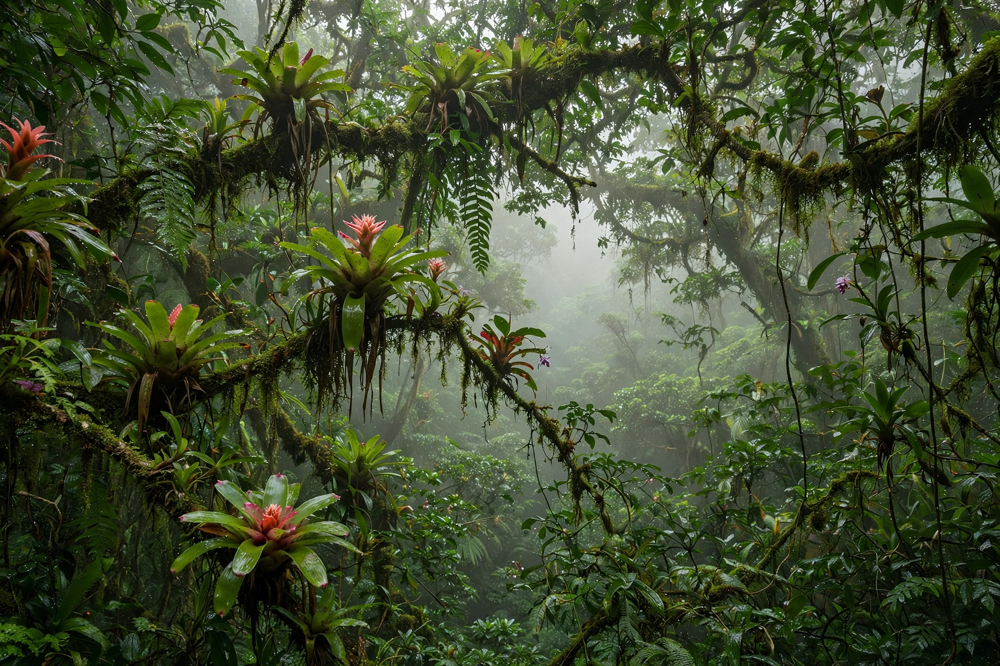

| Atlantic Forest | |
 | |
| Portuguese | Mata Atlântica |
|---|---|
| Countries | Brazil, Paraguay, Argentina |
| Original extent | about 1.4 million km² |
| Remaining | roughly 12–16% of original cover |
| Status | Biodiversity hotspot |
The Atlantic Forest (Portuguese: Mata Atlântica) is a tropical and subtropical forest biome that once stretched along the Atlantic coast of Brazil, from Rio Grande do Norte to Rio Grande do Sul, with extensions into eastern Paraguay and northeastern Argentina (Misiones). It is one of the world's great biodiversity hotspots, with exceptionally high levels of endemism.
Separated from the Amazon rainforest by the drier Cerrado and Caatinga, the Atlantic Forest evolved in isolation, producing thousands of endemic species, including golden lion tamarins, maned sloths, and a vast diversity of bromeliads, orchids and birds. The forest encompasses several vegetation types, from coastal restinga and lowland rainforest to montane and Araucaria forests in the south.
Five centuries of logging (beginning with brazilwood), sugarcane and coffee planting, cattle ranching and urbanisation — Brazil's largest cities, São Paulo and Rio de Janeiro, lie within its original range — have reduced the forest to a fraction of its original extent, mostly in fragmented remnants. Estimates of remaining cover range from about 12% to 16%.
The Atlantic Forest is protected under Brazilian law as national heritage, and parts are inscribed as UNESCO World Heritage Sites, including the Discovery Coast reserves in Bahia and the Southeast Reserves in Paraná and São Paulo. Restoration initiatives, such as the Atlantic Forest Restoration Pact, aim to reconnect fragments and restore millions of hectares. The forest survives around places such as Angra dos Reis and throughout the Serra do Mar.